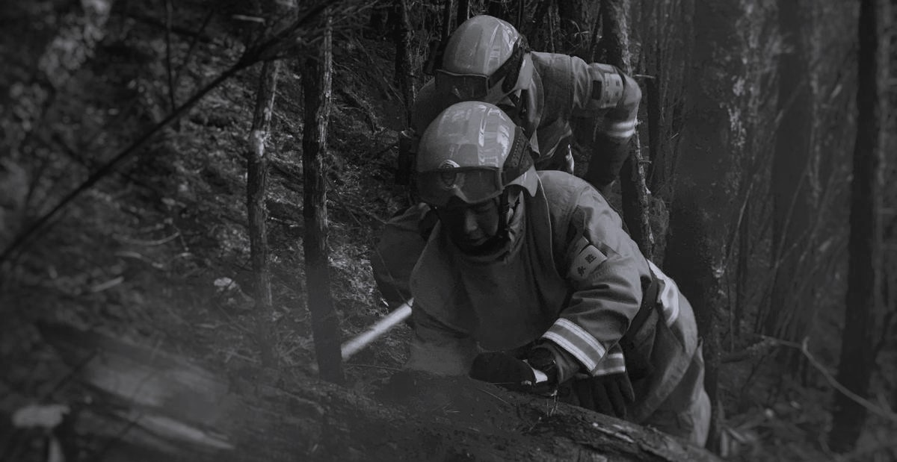

Your browser does not support the video element.
燎原星火
Embers of the Wild
森林火灾突发性强，破坏性大，对生态环境与人类生命财产安全造成极大威胁。
加强火源控制，提高防火意识，是保护我国森林资源、 避免悲剧重演的应有之义。

2024年2月21日，#贵州普安山火2名救火人员牺牲# 冲上热搜，社会开始关注贵州火情。
2024年2月10日至21日，贵州省共发生森林火情
221起
，
武警、消防、森防、专业救援队伍及社会救援力量出动
730
队次，
累计投入
9200
余人、近
4万
台（套、件）装备参与森林火灾扑救，
发动基层党员干部、民兵、群众及志愿者
1.5万
余人。
为何直到21日，贵州山火才引发社会关注？
山火“燃”后留下了怎样的警示？
#贵州山火#与#热辣滚烫#话题搜索指数对比
从二月初到三月底，通过比较#贵州山火#与#热辣滚烫#两个话题
的热度，我们不难看出，电影《热辣滚烫》的话题热度峰值、
平均热度值、热度维持时间都远高于重大灾害“贵州山火”
多起严重的山火，各方救援力量的连续作战，各地团结暖心的驰援，
网上没刷到，新闻滞后热，当救援人员与大火英勇战斗的时候，
很多网民却在吃瓜“秦朗作业本丢了”“贾玲减肥100斤”……
多起严重的山火，各方救援力量的连续作战，各地团结暖心的驰援……网上没刷到，新闻滞后热，当救援人员与大火英勇战斗的时候，很多网民却在吃瓜“秦朗作业本丢了”“减肥100斤”……此次贵州山火被其他一些热点话题遮蔽
对自然灾害的集体失明，对森林哀歌的无情屏蔽，背后反映出民众对紧急事件的敏感度和责任感的缺失。
中国各省份森林火灾次数散点图
从总体上看，由于我国幅员辽阔，不同地区在地形、气候等自然条件
上存在较大差异，相伴而生的人类活动也不同，因而会导致森林火灾
的发生次数存在较大的
地域性差异
。在这十年间，森林火灾集中发生
在我国中部和南部。其中，
湖南、广西、贵州
三省为火灾多发地区，
湖北、河南、四川
也常有森林火灾发生，这些地区森林覆盖率高，地
形复杂，交通不便，发生森林火灾容易造成较为严重的后果；而西部
地区由于森林资源的相对匮乏，森林火灾发生次数较少，风险较低。
从火灾发生的范围和强度上看，
森林火灾一般分为
特别重大、重大、较大和一般火灾四个等级。
我国每年森林火灾以
一般火灾和较大火灾
为主要类型。
得益于国家采取了有效的防治措施，
我国森林火灾
发生次数呈下降趋势，
发生强度也在逐渐减弱。
山火无情，它带来的不仅仅是对生态环境与人类生命财产安全的威胁，
更有可能造成生命的悲剧。每年都会有
超20人
在森林火灾中不幸罹难，
其中2010年因森林火灾导致的伤亡人数高达
108人
，伤亡人数最少的
2012年也有21人。但从时间趋势上看，伤亡人数近年来波动下降。
2006年
是火场总面积的峰值年，达到了
562,303.57
公顷。
受害森林面积也达到峰值，为
408,254.89
公顷。
在2006年经历了大规模的森林火灾后，火场总面积和受害森林
面积均呈现出明显的下降趋势。尤其是2023年，火灾影响显著
减弱，反映出防火工作的成效，表明我国在森林火灾的预防和
应对方面取得了重要进步
森林火灾的防治和扑救一直是一个世界性难题。植被茂密、路途遥远、交通不便、气候和地形复杂等因素，都给现场灭火带来严峻的挑战。
在经济社会快速发展的今天，没有任何一个国家能对森林火灾放任自燃。
“增强责任意识，压实各方责任”
近年来，随着我国森林火
灾防控体系的逐步完善
，火灾
发生频率和规模显著减少，
防控措施更加有效。
通过引
入先进技术如无人机监测和卫星遥感，火灾能够在早期
得到发现并迅速控制，
减少了救援资源的投入。
但森林火灾仍在吞噬着人民的生命，查清火灾成因，
控制野外火源是防火工作的关键。
诱发森林火灾的原因分为生产性火源、非生产性火源和其他火源。
生产性火源包括烧荒烧炭、炼山造林、烧牧场等，
非生产性火源包括野外吸烟、上坟烧纸、取暖做饭等，
其他火源包括故意放火、雷击火等。
我国由
人为因素
引发的森林火灾占比较大，自然火引发的火灾比例
较小。其中，
烧荒烧炭
是最易引发森林火灾的火源，其后依次是
上坟烧纸、野外吸烟、炼山造林、小孩玩火
，
这五类原因相加的占比达到已查明火源的一半（
57.91%
）以上。
针对这些人为因素，国家制定了一系列规章制度
1、不要携带火种进山
2、不要在林区吸烟、用火把照明
3、不要在山上野炊、烧烤食物
4、不要在林区内上香、烧纸、燃放烟花爆竹
5、不要炼山、烧荒、烧田埂草、堆烧等
6、不要让特殊人群和未成年人在林区内玩火
7、不要在野外烧火取暖
8、不要乘车时向外扔烟头
9、不要在林区内狩猎、放火驱兽
10、不要让老、幼、弱、病、残者参加扑火抢险
中国森林草原森林
《防火安全“十不要”》
尽管国家努力防治森林火灾，但由人为因素引起的森林火灾仍时有发生，植被烧毁和人员伤亡等本可避免的悲剧也还在上演。
星星之火，虽微不足道，却能吞噬千里绿海。一个随意丢弃的烟蒂、一场未熄灭的篝火，
足以让万顷森林化为灰烬，生灵涂炭。火灾的肆虐，往往源于我们的一时疏忽，而后果却难以挽回。
提高责任意识，防范森林火灾，需要我们共同努力
“星星之火，可以燎原”